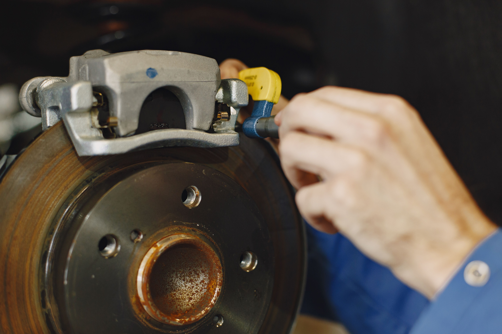

Brake Pad Thickness Chart: When to Replace Them

Brake pads are among the most important wear items on your vehicle. Every time you press the brake pedal, the pads press against the brake rotors to create friction and slow the wheels. As this happens, the friction material gradually wears down.
Knowing how thick brake pads should be can help you understand inspection results and recognize when replacement may be necessary. However, thickness is only one part of brake condition. Uneven wear, damaged rotors, contaminated pads, and other problems can also affect braking performance.
This guide explains common brake pad thickness measurements, how to interpret them, and when to have your braking system inspected.
Brake Pad Thickness Chart
Brake pad thickness is generally measured in millimeters (mm). The figures below are common guidelines for the remaining friction material, not universal specifications for every vehicle.
| Remaining Friction Material | General Condition | Recommended Action |
|---|---|---|
| 10–12 mm | Typical thickness for many new pads | Continue routine inspections |
| 6–9 mm | Moderate wear | Monitor condition and wear rate |
| 4–5 mm | Noticeable wear | Arrange an inspection and plan ahead |
| 3 mm | Low remaining material | Plan replacement soon; follow vehicle specifications |
| 2 mm or less | Severely worn | Arrange prompt replacement and inspection |
| 0 mm / metal contact | Friction material exhausted | Do not continue driving; arrange repair or towing |
These measurements refer to the friction material, not the total thickness of the pad including its metal backing plate. Some manufacturers specify different minimum thicknesses, so use the service information for your exact vehicle.
What Is the Minimum Safe Brake Pad Thickness?
There is no single minimum thickness that applies to every car. A common general guideline is to consider replacement at around 3 mm of remaining friction material, but the correct service limit depends on the vehicle and brake pad design.
At approximately 2 mm or less, the pads are heavily worn and should be inspected and replaced promptly according to the manufacturer's guidance. Waiting until the friction material is completely gone can allow metal parts to contact the rotor, potentially causing serious damage and reducing braking effectiveness.
If your vehicle has a brake pad wear indicator or an electronic warning system, do not ignore it. A warning may appear before the pad reaches a thickness you can easily see from outside the wheel.
How to Check Brake Pad Thickness
A visual inspection may reveal worn brake pads, but it does not always show the full picture. The inner pad can wear differently from the outer pad, and some wheel designs make it difficult to see the friction material clearly.
1. Park the Vehicle Safely
Park on a level surface, switch off the engine, apply the parking brake, and allow the brakes to cool. Never touch a hot rotor or reach near moving parts. If lifting the vehicle is necessary, use the correct lifting points and properly rated jack stands; never rely on a jack alone.
2. Look Through the Wheel
On some vehicles, you can see part of the brake pad through the wheel openings. Look for the friction material between the metal backing plate and the rotor. Do not confuse the thin metal backing plate with the friction material itself.
3. Measure the Friction Material
If the pad is accessible and you know how to inspect it safely, use an appropriate brake pad thickness gauge or other suitable measuring tool. Measure the friction material only. A professional inspection may be necessary if the pad is difficult to access or the measurement is uncertain.
4. Check Both Inner and Outer Pads
The inner and outer pads on the same wheel may not wear evenly. Compare their condition where possible and have the brakes inspected if one pad is significantly thinner than the other. Uneven wear can indicate a sticking caliper, slide pin problem, or another fault.
If you are not confident performing a brake inspection, ask a qualified mechanic to measure the pads and inspect the rotors and calipers.
6 Signs Your Brake Pads Need Replacing
1. Squealing or High-Pitched Noise
Some brake pads use a small metal wear indicator that produces a squealing sound when the pads become worn. However, squealing can also result from moisture, dust, glazing, or other brake conditions. A new or persistent noise deserves attention.
2. Grinding When Braking
A grinding or harsh metal-on-metal noise can indicate that the friction material is exhausted or that another brake component is damaged. Stop driving as soon as it is safe and arrange a professional inspection. Continuing to drive may damage the rotors and compromise braking.
3. Brake Pad Warning Light
Some vehicles have an electronic brake pad wear warning. If it appears, consult the owner's manual and arrange an inspection. Not every car has this feature, and the meaning of dashboard symbols can vary by model.
4. Reduced Braking Performance
If the vehicle takes longer to stop or braking feels different, worn pads may be one possible cause. Other causes include rotor problems, brake fluid issues, tire condition, or faults elsewhere in the braking system. Treat a noticeable change in braking performance as a safety concern.
5. Vibration or Pulsation
Vibration through the brake pedal or steering wheel during braking may be related to rotor thickness variation, uneven deposits, suspension components, or other issues. It is not a reliable way to determine brake pad thickness by itself.
6. Uneven Brake Pad Wear
If one pad is much thinner than the others, the brake caliper, guide pins, or related components may not be moving correctly. Replacing the pads without addressing the underlying problem can lead to uneven wear again.
How Long Do Brake Pads Last?
Brake pad lifespan varies widely. Many pads last roughly 25,000–70,000 miles, but some wear out sooner while others last longer. The range depends on the vehicle, pad material, driving style, traffic, terrain, and vehicle load.
Frequent stop-and-go traffic, repeated hard braking, mountainous roads, towing, and carrying heavy loads can increase brake wear. Highway driving with fewer stops may allow pads to last longer.
Mileage alone is not enough to determine whether pads need replacement. Regular inspections and actual thickness measurements provide a more reliable picture of their condition.
Do Front or Rear Brake Pads Wear Faster?
On many vehicles, front brake pads wear faster because the front brakes handle a large share of the braking force as weight shifts forward during deceleration. However, this is not true for every vehicle or driving situation.
Electronic brake-force distribution, regenerative braking in hybrid and electric vehicles, driving conditions, and brake system design can all affect wear. Rear pads may wear quickly on some vehicles, so both axles should be inspected according to the manufacturer's schedule.
Do You Need to Replace Brake Rotors Too?
Not always. Rotors can sometimes remain in service when new pads are installed, provided the rotors meet the manufacturer's requirements and have no unacceptable damage. A mechanic should check rotor thickness, surface condition, and any specified limits.
Rotors may need replacement if they are below the minimum thickness, badly scored, cracked, heat-damaged, or otherwise outside service specifications. Some manufacturers recommend replacing or resurfacing rotors when fitting new pads, so vehicle-specific guidance matters.
Brake pads should also be installed correctly and inspected alongside the calipers and related hardware. Brakes are safety-critical components, so uncertain repairs should be handled by a qualified professional.
Frequently Asked Questions
What is the minimum brake pad thickness?
The minimum depends on the vehicle and pad design. Around 3 mm is a common point to plan replacement, while 2 mm or less generally indicates severe wear that needs prompt attention. Always follow the manufacturer's service limits.
How thick are new brake pads?
Many new disc brake pads have roughly 10–12 mm of friction material, but the exact thickness varies by vehicle and pad type. Check the specifications for the correct replacement part.
Can I drive with 3 mm brake pads?
Three millimeters is commonly considered low, so replacement should be planned soon. The appropriate timing depends on your vehicle, wear rate, and manufacturer guidance. If you hear grinding or notice reduced braking performance, stop driving when safe and arrange an inspection.
Should brake pads be replaced in pairs?
Brake pads are generally replaced as an axle set, meaning both front wheels or both rear wheels, rather than replacing only one side. This helps maintain balanced braking. Follow the vehicle manufacturer's repair instructions.
Do worn brake pads always make noise?
No. Some worn pads remain quiet, and not every vehicle has a mechanical or electronic wear indicator. Regular visual inspections and thickness measurements are important even when there is no unusual noise.
Can I replace brake pads without replacing the rotors?
Sometimes. Rotors can remain in service if they meet the manufacturer's thickness and condition requirements. A mechanic should inspect them for wear, scoring, cracks, and other damage before deciding whether replacement is necessary.
How often should brake pads be checked?
Check brake condition according to your vehicle's maintenance schedule and have the pads inspected during routine service or tire changes when practical. Inspect them sooner if you notice warning lights, unusual noises, vibration, or changes in braking performance.